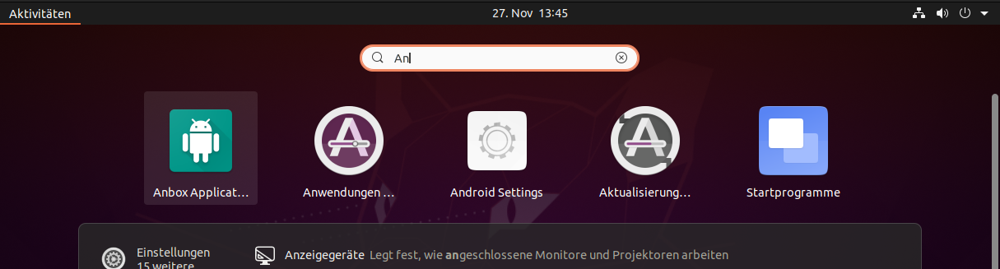
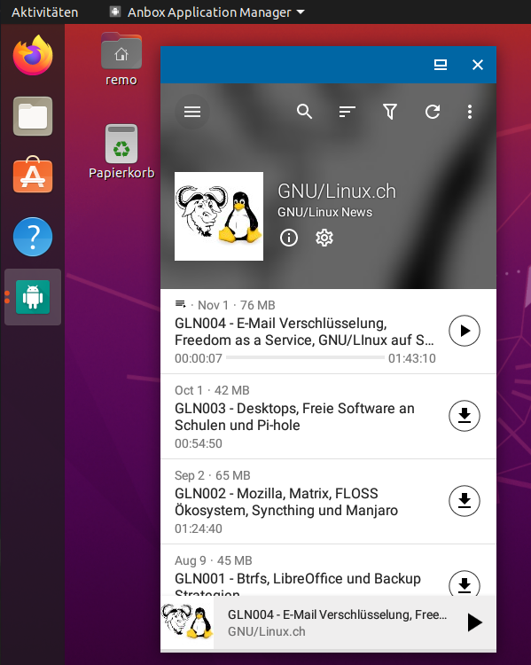

Anbox ermöglicht es, Android Apps auf deinem GNU/Linux System auszuführen. Dazu packt Anbox das Android Betriebssystem in einen Container, abstrahiert den Hardwarezugriff und integriert zentrale Systemdienste in ein GNU/Linux System. Jede Android Anwendung wird wie jede andere native Anwendung in das Betriebssystem integriert. Um das zu erreichen, verwendet Anbox Standard Linux Technologien wie Container (LXC), um das Android Betriebssystem vom Host zu trennen. Jede Androidversion ist für diesen Ansatz geeignet, und die Macher von Anbox versuchen, mit der neuesten verfügbaren Version des Android Open Source Project Schritt zu halten.
Die folgenden Funktionen bietet Anbox:
Die Installation von Anbox auf einem normalen Linux System ist einfach und unkompliziert, solange das System Snaps unterstützt. Aus diesem Grund habe ich Anbox in einer Ubuntu 20.04 VM (mit GNOME Boxes) ausprobiert da ich Fedora nutzte und normalerweise keine Snaps verwende.
sudo snap install --devmode --beta anboxUm Apps in den von Anbox bereitgestellten Android Container zu installieren wird derzeit die Sideloading Funktionalität verwendet, die Android zur Verfügung stellt. Dazu muss die Android Debug Bridge (ADB) auf dem Host-System installiert werden.
sudo apt install android-tools-adbSobald ADB installiert ist, sind wir bereit, Android Apps zu installieren.
Anbox bietet keine Funktionalität um Android Apps herunterzuladen. Man muss sie von einer anderen Quelle im Internet herunterladen. Viele Open-Source-Projekte bieten auf den Projektseiten eine APK Datei zum Download an. Auf der Website von F-Droid können auch alle Anwendungen als APK heruntergeladen werden. Sobald man das APK Paket hat, kann mit dem folgenden Befehl die App in den Android Container installieren:
adb install antennapod.apkNun kann über das Anwendungsmenu von Betriebssystem Anbox gestartet werden.

Sobald Anbox offen ist, kann die zuvor installierte App geöffnet werden.
